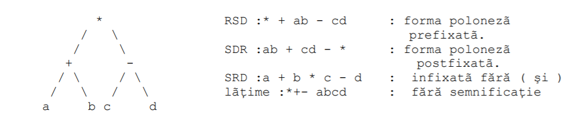

Vom înţelege prin traversare o metodă de examinare sistematică a nodurilor unui arbore astfel încât
fiecare nod să fie vizitat o singură dată şi să nu rămînă niciun nod nevizitat. In urma unei traversări se
defineşte şi o relaţie de ordine peste mulţimea nodurilor arborelui, relaţie de care pot beneficia alţi
algoritmi de prelucrare.
Se remarcă patru strategii de traversare a unui arbore.
1. se vizitează Rădăcina v. 2. se vizitează în preordine subarborii cu rădăcinile v1,v2,...,vk în această ordine.
1. vizitează în inordine subarborele stîng 2. vizitează Rădăcina v 3. vizitează în inordine subarborele drept.
1. vizitează în postordine v1, v2, ...vk în această ordine. 2. vizitează Rădăcina r.
1. se vizitează Rădăcina apoi celelalte noduri pe nivele, în cadrul fiecărui nivel nodurile sunt vizitate de la stînga la dreapta
In cazul arborilor binari se utilizează o serie de prescurtări ale principalelor metode de traversare
astfel:
- pentru preordine - RSD (Rădăcina, Stînga, Dreapta), adică se vizitează Rădăcina, apoi
subarborele stîng, după care cel drept; la vizitarea fiecărui subarbore se aplică din nou aceeaşi regulă
de vizitare, începînd cu Rădăcina sa.
- pentru inordine - SRD (Stînga, Rădăcina, Dreapta);
- pentru postordine - SDR (Stînga, Dreapta, Rădăcina).
Dacă vom parcurge un arbore care reprezintă o expresie aritmetică vom găsi că o parte din listele obţinute au o semnificaţie cunoscută:
